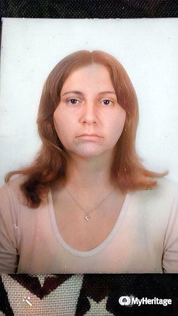

Namorada, Mãe, Esposa e Companheira
Glorinha a Insubstitível
As vezes, ela me surpreendia olhando-a demoradamente, então me perguntava, por quê você está me olhando? Não paguei vigilante para me obervar. Então eu respondia que não precisava pagar eu a olhava com os olhos do coração, que enxergam através da alma e o fazia por amá-la, da mesma forma que a amava nos primeiros dias de namoro e que jamais a esqueceria.
Glorinha, Marilza, Marta, e eu
Essa é uma foto de um passeio que fizemos a Aparecida do Norte. Tínhamos: Ela 17 anos e eu 16 anos. Mas não éramos nem namorados ainda. As outras duas são Marilza e Marta ambas nossas amigas.
Glorinha - A menina mais linda aos 25 anos
Nessa foto ela tinha 25 anos e estava grávida do nosso segundo filho Giancarlo.
Márcia, nossa primeira filha
Quando a nossa primeira filha, a Márcia nasceu, eu estava participando da "detestável" Operação Dragão do Corpo de Fuzileiros Navais. Só fui vê-la quase duas semanas depois do nascimento dela, já quase no Natal. Eu estava com 21 anos. Voltava para casa e no trem um amigo que encontrei, me falou que havia novidades em casa. Era o nascimento da minha filhinha. Foi incrível. Elas estavam deitadinhas uma ao lado da outra. Minha amada Rainha, estava com um imenso sorriso de fecilidade e vitória. Vitória, porque ela havia vencido uma imensa batalha pela vida de uma criaturinha trazida ao mundo e que venceu com o nascimento da nossa esperada filha.
Na igreja
Glorinha e eu numa foto próximo a um dos jardins da Igreja, num domingo.
Aniversário de casamento
Nossa festa em família dos nossos 49 anos de casamento, com a participação da nossa amiga Vivian.
Baile na Estaca Campo Grande - RJ
Aqui novamente juntos num baile na sede da Estaca Campo Grande RJ, onde dançamos muito e conversamos com nossos amigos da Igreja. Inesquecível.
Os versos que te dou
Ouve estes versos que te dou, eu
os fiz hoje que sinto o coração contente
porque sei que teu amor é meu somente,
eu farei versos...e serei feliz...
E hei de fazê-los pela vida afora,
versos de sonho e de amor, e relembraremos
depois
o passado de nós dois...
esse passado que começa agora...
Estes versos repletos de ternura são
versos meus, mas que são teus, também...
Sozinha, hás de escutá-los sem ninguém que
possa perturbar vossa ventura...
Quando o tempo branquear os teus cabelos
hás de um dia mais tarde,
revivê-los nas
lembranças que a vida não desfez...Porque
O verdadeiro amor
entre duas pessas não se
apaga, vive de eternidades em eternidades...
E ao lê-los...com saudade em tua dor...
hás de rever, chorando, o nosso amor,
hás de lembrar, também, de quem os fez...
Se nesse tempo eu já tiver partido e
outros versos quiseres,
teu pedido deixa
ao lado da cruz para onde eu vou...
Quando lá novamente, então tu fores,
pode colher do chão todas as flores,
pois
são os versos de amor que ainda te dou,
o seu eterno esposo, e amor...